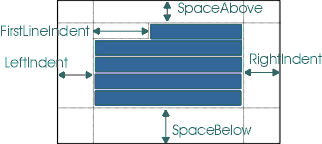

javax.swing.text.StyleConstants
javax.swing.text.StyleConstants
|
JavaTM 2 Platform Standard Ed. 6 |
|||||||||
| 上一个类 下一个类 | 框架 无框架 | |||||||||
| 摘要： 嵌套 | 字段 | 构造方法 | 方法 | 详细信息： 字段 | 构造方法 | 方法 | |||||||||
java.lang.Object
public class StyleConstants
一个已知的 或常见的属性键和方法的集合，可通过应用 AttributeSet 或 MutableAttributeSet 方法以类型安全的方式获取/设置属性。
段落属性定义了所呈现的段落。所有的大小都是以点的形式指定的（如 postscript 中所示），其测量与设备无关。

| 嵌套类摘要 | |
|---|---|
static class |
StyleConstants.CharacterConstants
这是一个类型安全的已知 属性的枚举，它用于字符样式。 |
static class |
StyleConstants.ColorConstants
这是一个类型安全的已知 属性的枚举，它用于颜色样式。 |
static class |
StyleConstants.FontConstants
这是一个类型安全的已知 属性的枚举，它用于字体样式。 |
static class |
StyleConstants.ParagraphConstants
这是一个类型安全的已知 属性的枚举，它用于段落样式。 |
| 字段摘要 | |
|---|---|
static int |
ALIGN_CENTER
段落对齐的可能值。 |
static int |
ALIGN_JUSTIFIED
段落对齐的可能值。 |
static int |
ALIGN_LEFT
段落对齐方式的可能值。 |
static int |
ALIGN_RIGHT
段落对齐的可能值。 |
static Object |
Alignment
段落的对齐方式。 |
static Object |
Background
背景色属性的名称。 |
static Object |
BidiLevel
由 Unicode bidi 算法指派的字符双向级别。 |
static Object |
Bold
粗体属性的名称。 |
static Object |
ComponentAttribute
组件属性的名称。 |
static String |
ComponentElementName
用于表示组件的元素名称。 |
static Object |
ComposedTextAttribute
撰写文本的输入法属性的名称。 |
static Object |
Family
字体系列的名称。 |
static Object |
FirstLineIndent
段落第一行要缩进的空间量。 |
static Object |
FontFamily
字体系列的名称。 |
static Object |
FontSize
字体大小的名称。 |
static Object |
Foreground
前景色属性的名称。 |
static Object |
IconAttribute
图标属性的名称。 |
static String |
IconElementName
用于表示图标的元素名称。 |
static Object |
Italic
斜体属性的名称。 |
static Object |
LeftIndent
段落左边的缩进量。 |
static Object |
LineSpacing
段落的行之间的空间量。 |
static Object |
ModelAttribute
用来标识嵌入了对象的模型的属性，这些嵌入的对象具有分开的模型视图。 |
static Object |
NameAttribute
用于命名属性集合的属性名称。 |
static Object |
Orientation
段落的方向。 |
static Object |
ResolveAttribute
用来标识属性的解析父集的属性名（如果定义了属性的解析父集）。 |
static Object |
RightIndent
段落右边的缩进量。 |
static Object |
Size
字体大小的名称。 |
static Object |
SpaceAbove
段落上方的空间量。 |
static Object |
SpaceBelow
段落下方的空间量。 |
static Object |
StrikeThrough
删除线属性的名称。 |
static Object |
Subscript
下标属性的名称。 |
static Object |
Superscript
上标属性的名称。 |
static Object |
TabSet
段落的 TabSet，类型为包含了 TabStop 的 TabSet。 |
static Object |
Underline
下划线属性的名称。 |
| 方法摘要 | |
|---|---|
static int |
getAlignment(AttributeSet a)
获取对齐设置。 |
static Color |
getBackground(AttributeSet a)
从属性列表中获取背景色设置。 |
static int |
getBidiLevel(AttributeSet a)
获取 BidiLevel 设置。 |
static Component |
getComponent(AttributeSet a)
从属性列表中获取组件设置。 |
static float |
getFirstLineIndent(AttributeSet a)
获取首行缩进设置。 |
static String |
getFontFamily(AttributeSet a)
从属性列表中获取字体系列设置。 |
static int |
getFontSize(AttributeSet a)
从属性列表中获取字体大小设置。 |
static Color |
getForeground(AttributeSet a)
从属性列表中获取前景色设置。 |
static Icon |
getIcon(AttributeSet a)
从属性列表中获取图标设置。 |
static float |
getLeftIndent(AttributeSet a)
获取左边缩进设置。 |
static float |
getLineSpacing(AttributeSet a)
获取行间距设置。 |
static float |
getRightIndent(AttributeSet a)
获取右边缩进设置。 |
static float |
getSpaceAbove(AttributeSet a)
获取上部空间设置。 |
static float |
getSpaceBelow(AttributeSet a)
获取下部空间设置。 |
static TabSet |
getTabSet(AttributeSet a)
获取 TabSet。 |
static boolean |
isBold(AttributeSet a)
确定是否设置了粗体属性。 |
static boolean |
isItalic(AttributeSet a)
确定是否设置了斜体属性。 |
static boolean |
isStrikeThrough(AttributeSet a)
确定是否设置了删除线属性。 |
static boolean |
isSubscript(AttributeSet a)
确定是否设置了下标属性。 |
static boolean |
isSuperscript(AttributeSet a)
确定是否设置了上标属性。 |
static boolean |
isUnderline(AttributeSet a)
确定是否设置了下划线属性。 |
static void |
setAlignment(MutableAttributeSet a,
int align)
设置对齐方式。 |
static void |
setBackground(MutableAttributeSet a,
Color fg)
设置背景色。 |
static void |
setBidiLevel(MutableAttributeSet a,
int o)
设置 BidiLevel。 |
static void |
setBold(MutableAttributeSet a,
boolean b)
设置粗体属性。 |
static void |
setComponent(MutableAttributeSet a,
Component c)
设置组件属性。 |
static void |
setFirstLineIndent(MutableAttributeSet a,
float i)
设置首行缩进。 |
static void |
setFontFamily(MutableAttributeSet a,
String fam)
设置字体属性。 |
static void |
setFontSize(MutableAttributeSet a,
int s)
设置字体大小属性。 |
static void |
setForeground(MutableAttributeSet a,
Color fg)
设置前景色。 |
static void |
setIcon(MutableAttributeSet a,
Icon c)
设置图标属性。 |
static void |
setItalic(MutableAttributeSet a,
boolean b)
设置斜体属性。 |
static void |
setLeftIndent(MutableAttributeSet a,
float i)
设置左边缩进。 |
static void |
setLineSpacing(MutableAttributeSet a,
float i)
设置行间距。 |
static void |
setRightIndent(MutableAttributeSet a,
float i)
设置右边缩进。 |
static void |
setSpaceAbove(MutableAttributeSet a,
float i)
设置上部空间。 |
static void |
setSpaceBelow(MutableAttributeSet a,
float i)
设置下部空间。 |
static void |
setStrikeThrough(MutableAttributeSet a,
boolean b)
设置删除线属性。 |
static void |
setSubscript(MutableAttributeSet a,
boolean b)
设置下标属性。 |
static void |
setSuperscript(MutableAttributeSet a,
boolean b)
设置上标属性。 |
static void |
setTabSet(MutableAttributeSet a,
TabSet tabs)
设置 TabSet。 |
static void |
setUnderline(MutableAttributeSet a,
boolean b)
设置下标属性。 |
String |
toString()
返回字符串表示形式。 |
| 从类 java.lang.Object 继承的方法 |
|---|
clone, equals, finalize, getClass, hashCode, notify, notifyAll, wait, wait, wait |
| 字段详细信息 |
|---|
public static final String ComponentElementName
public static final String IconElementName
public static final Object NameAttribute
public static final Object ResolveAttribute
public static final Object ModelAttribute
public static final Object BidiLevel
public static final Object FontFamily
public static final Object Family
public static final Object FontSize
public static final Object Size
public static final Object Bold
public static final Object Italic
public static final Object Underline
public static final Object StrikeThrough
public static final Object Superscript
public static final Object Subscript
public static final Object Foreground
public static final Object Background
public static final Object ComponentAttribute
public static final Object IconAttribute
public static final Object ComposedTextAttribute
public static final Object FirstLineIndent
public static final Object LeftIndent
public static final Object RightIndent
public static final Object LineSpacing
public static final Object SpaceAbove
public static final Object SpaceBelow
public static final Object Alignment
public static final Object TabSet
public static final Object Orientation
public static final int ALIGN_LEFT
public static final int ALIGN_CENTER
public static final int ALIGN_RIGHT
public static final int ALIGN_JUSTIFIED
| 方法详细信息 |
|---|
public String toString()
Object 中的 toStringpublic static int getBidiLevel(AttributeSet a)
a - 属性集
public static void setBidiLevel(MutableAttributeSet a,
int o)
a - 属性集o - 双向级别值public static Component getComponent(AttributeSet a)
a - 属性集
public static void setComponent(MutableAttributeSet a,
Component c)
a - 属性集c - 组件public static Icon getIcon(AttributeSet a)
a - 属性集
public static void setIcon(MutableAttributeSet a,
Icon c)
a - 属性集c - 图标public static String getFontFamily(AttributeSet a)
a - 属性集
public static void setFontFamily(MutableAttributeSet a,
String fam)
a - 属性集fam - 字体public static int getFontSize(AttributeSet a)
a - 属性集
public static void setFontSize(MutableAttributeSet a,
int s)
a - 属性集s - 字体大小public static boolean isBold(AttributeSet a)
a - 属性集
public static void setBold(MutableAttributeSet a,
boolean b)
a - 属性集b - 指定 true/false 来表示是否设置了这一属性public static boolean isItalic(AttributeSet a)
a - 属性集
public static void setItalic(MutableAttributeSet a,
boolean b)
a - 属性集b - 指定 true/false 来表示是否设置了这一属性public static boolean isUnderline(AttributeSet a)
a - 属性集
public static boolean isStrikeThrough(AttributeSet a)
a - 属性集
public static boolean isSuperscript(AttributeSet a)
a - 属性集
public static boolean isSubscript(AttributeSet a)
a - 属性集
public static void setUnderline(MutableAttributeSet a,
boolean b)
a - 属性集b - 指定 true/false 来表示是否设置了这一属性
public static void setStrikeThrough(MutableAttributeSet a,
boolean b)
a - 属性集b - 指定 true/false 来表示是否设置了这一属性
public static void setSuperscript(MutableAttributeSet a,
boolean b)
a - 属性集b - 指定 true/false 来表示是否设置了这一属性
public static void setSubscript(MutableAttributeSet a,
boolean b)
a - 属性集b - 指定 true/false 来表示是否设置了这一属性public static Color getForeground(AttributeSet a)
a - 属性集
public static void setForeground(MutableAttributeSet a,
Color fg)
a - 属性集fg - 颜色public static Color getBackground(AttributeSet a)
a - 属性集
public static void setBackground(MutableAttributeSet a,
Color fg)
a - 属性集fg - 颜色public static float getFirstLineIndent(AttributeSet a)
a - 属性集
public static void setFirstLineIndent(MutableAttributeSet a,
float i)
a - 属性集i - 值public static float getRightIndent(AttributeSet a)
a - 属性集
public static void setRightIndent(MutableAttributeSet a,
float i)
a - 属性集i - 值public static float getLeftIndent(AttributeSet a)
a - 属性集
public static void setLeftIndent(MutableAttributeSet a,
float i)
a - 属性集i - 值public static float getLineSpacing(AttributeSet a)
a - 属性集
public static void setLineSpacing(MutableAttributeSet a,
float i)
a - 属性集i - 值public static float getSpaceAbove(AttributeSet a)
a - 属性集
public static void setSpaceAbove(MutableAttributeSet a,
float i)
a - 属性集i - 值public static float getSpaceBelow(AttributeSet a)
a - 属性集
public static void setSpaceBelow(MutableAttributeSet a,
float i)
a - 属性集i - 值public static int getAlignment(AttributeSet a)
a - 属性集
StyleConstants.ALIGN_LEFT
public static void setAlignment(MutableAttributeSet a,
int align)
a - 属性集align - 对齐方式值public static TabSet getTabSet(AttributeSet a)
a - 属性集
TabSet
public static void setTabSet(MutableAttributeSet a,
TabSet tabs)
a - 属性集。tabs - TabSet
|
JavaTM 2 Platform Standard Ed. 6 |
|||||||||
| 上一个类 下一个类 | 框架 无框架 | |||||||||
| 摘要： 嵌套 | 字段 | 构造方法 | 方法 | 详细信息： 字段 | 构造方法 | 方法 | |||||||||
版权所有 2008 Sun Microsystems, Inc. 保留所有权利。请遵守GNU General Public License, version 2 only。